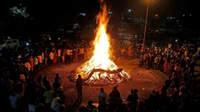
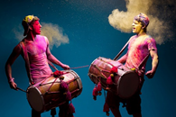
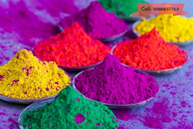
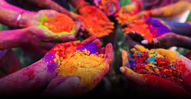
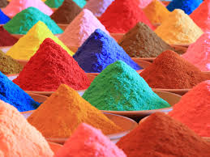
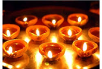
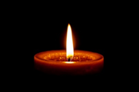
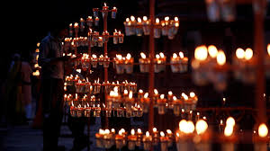
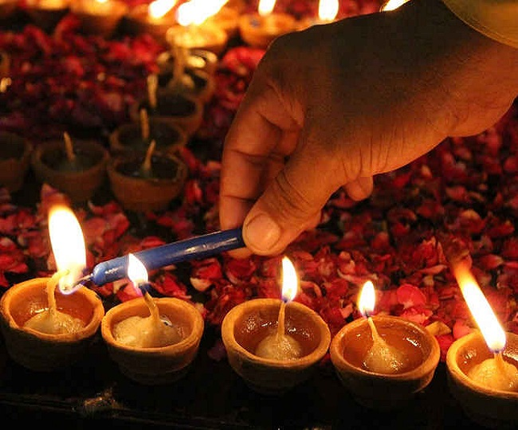
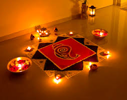

Holi is a festival that lies between the end of winter and the start of summer. During this period there is a growth of bacteria in the surrounding atmosphere as well as in our body. As you might already know Holi is celebrated with a bonfire the day before and people take rounds around the fire. People believe that walking around the bonfire washes your sins away. But the scientific reason is something else. When Holika has burnt the temperature in the surrounding rises to 50/60 degrees Celsius. The heat from this bonfire kills the bacteria present and cleanses the atmosphere as well as our body.As you all know Holi is a fun festival of music and colors. Due to the change of seasons, people usually feel lazy and tardy. However, the merry and fun environment where people dance and play instruments demand a lot of physical movement and help to regenerate the human body at that time.Not only this but the colors used in the olden days also had a lot of scientific benefits. When the culture of playing Holi started, people used colors of natural sources like yellow from turmeric, green from mehndi leaves, purple from beetroot, and so on. These natural colors had a positive effect on the human body, and they strengthened the ions in the body to promote good health and beauty.However, people today are using synthetic colors since they are much cheaper and readily available than herbal colors. But do you think these synthetic colors are beneficial? Definitely no. These colors can only have negative effects on our bodies. They comprise of toxic substances such as lead oxide, diesel, copper sulfate, and many more that can cause rashes on the skin, allergies, frizzy hair, etc. It can go as worse as skin diseases and clogging of hair cuticles. Instead of going through so much, it's better if people start using herbal colors. And if those colors are not available you can easily make them at home. Today’s modern world has the technology and so many appliances. So why not make use of them.
Diwali
Diwali or Deepavali is a Hindu festival of lights that is usually celebrated between mid-October and mid-November. The word Deepavali literally means a row of lamps. So, it is understandable that lamps play the most important role in this festival. On Diwali, millions of lamps are lighted in houses and temples. They are made up of recyclable materials like clay.There is a scientific reason behind Deepavali. The scientific explanation for this is in the month of winter a lot of insects multiply and destroy crops. When you light lamps in millions, these insects come and fall into them and die. This does not mean you kill them indirectly. It is the innate nature of these insects that they are attracted to light and die.Also, the oil used for those lamps in the olden days was a special oil with some medicinal properties which does not harm the environment in any sort of way. Many people also use clarified butter/ghee for lighting ideas. Burning ghee lamps will benefit the whole house. Ghee has all the properties of removing various types of skin diseases.The light coming from the diya represents moving from darkness into the light. But do you know there is a scientific reason too behind this tradition? The light of diya produces magnetic changes in the atmosphere of the surroundings. The electromagnetic force produced henceforth lingers on the skin for at least three hours and activates the blood cells present in our body.Diwali is a festival which Indians celebrate wholeheartedly. Yet another important thing involved with the festival is nothing else but firecrackers. Firecrackers are the most conflicting topic of this festival. Some take it to be a necessity to celebrate and fulfill their joys with crackers while others take it to be a harmful tradition. Firecrackers have many advantages like having fun, killing insects, boosting the economy, and many more. But its disadvantages can be harmful to the environment. Fireworks cause air pollution, noise pollution, injuries, and so much more.With the examples of these two festivals, it can be concluded that it's better if people start using the ancient methods of celebrating various festivals as they are much safer and scientifically beneficial for the environment as well as the citizens of the country.